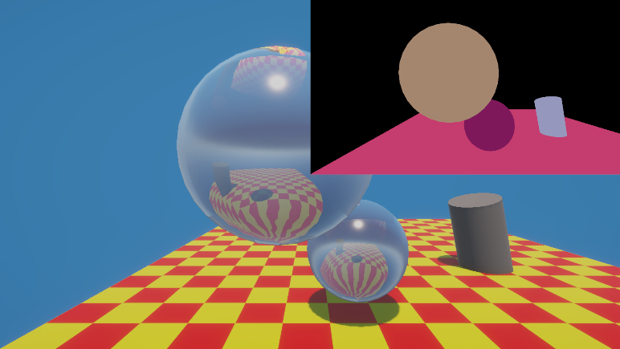
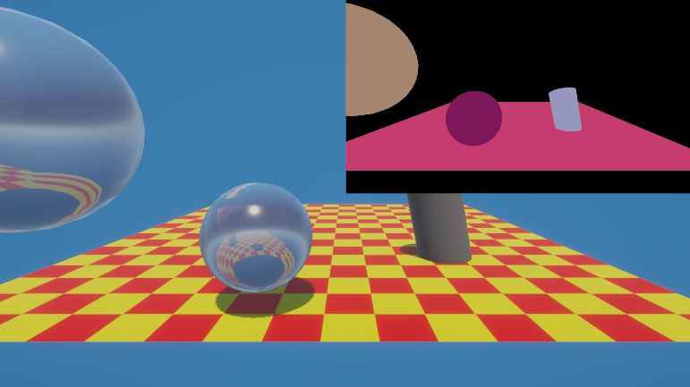

Raytracing Framework
Basic ray collision checking

Ordinary camera position with an extra cylinder

Alternative camera position

Real time rendering
Implementation Overview
This assignment is basically just calculating ray intersections with all the triangles in the scene.
Compute shader in Unity is a practical way to implement the ray calculation parallelly in gpu. So it is pretty performant.
Ray Tracer Implementation
// Compute shader
[numthreads(8,8,1)]
void CSMain (uint3 id : SV_DispatchThreadID)
{
uint width, height;
Result.GetDimensions(width, height);
if (id.x >= width || id.y >= height)
return;
// Calculate ray in Camera Space
float2 uv = float2((id.xy + 0.5) / float2(width, height) * 2.0 - 1.0);
float3 rayOrigin = float3(0, 0, 0); // cam is at origin
float3 rayDirection = normalize(float3(uv.x * _AspectRatio, uv.y, -_FocalLength)); // shot ray through pixel, in -Z direction
// calculate intersection with triangles
bool hit = false;
float closestT = 1e30;
float3 hitObjectColor = float3(0, 0, 0);
for (int i = 0; i < _TriangleCount; i++)
{
// change triangle vertex from world space to camera space, this is not ideal but this can let the calculation be in camera space
float3 v0 = mul(_WorldToCamera, float4(_Triangles[i].v0, 1)).xyz;
float3 v1 = mul(_WorldToCamera, float4(_Triangles[i].v1, 1)).xyz;
float3 v2 = mul(_WorldToCamera, float4(_Triangles[i].v2, 1)).xyz;
float t = RayTriangleIntersect(rayOrigin, rayDirection, v0, v1, v2);
if (t > 0 && t < closestT)
{
closestT = t;
hitObjectColor = _Triangles[i].color;
hit = true;
}
}
// hit = object color, miss = black
Result[id.xy] = hit ? float4(hitObjectColor.xyz, 1) : float4(0, 0, 0, 1);
}
Code explaination
- The calculation is done in camera space for simplicity.
- Triangle vertices are transformed from world space to camera space. This can be optimized by just calculate all the things in world space, but for this assignment I want to keep it simple.
- RayTriangleIntersect() returns a dot product.
Technologies Used
Course:
Global Illumination
Year:
2026